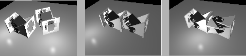

Next: 3 Locomoción Up: Locomoción de un Robot Previous: 1 Introducción
El prototipo construido, está formado por la unión en cadena de 8
módulos iguales, a los que llamamos módulos Y1. En la figura ![[*]](crossref.png) se muestra el diseño en 3D. Tienen un único grado de libertad, actuado
por un servomecanismo. El diseño de los módulos está inspirado en
la generación G1 de Polybot.
se muestra el diseño en 3D. Tienen un único grado de libertad, actuado
por un servomecanismo. El diseño de los módulos está inspirado en
la generación G1 de Polybot.
|
 |
Los módulos Y1 son sencillos y baratos. Permiten una rápida construcción
de prototipos de robots ápodos. Se pueden conectar de dos maneras
diferentes, como se muestra en la figura . Una
es la conexión en fase, en la que dos módulos adyacentes tienen la
misma orientación. Mediante esta encadenación, se construyen robots
ápodos en los que todas las articulaciones permanecen siempre en el
mismo plano, perpendicular al suelo. Cube Revolutions está
constituido por 8 módulos Y1 conectados en fase, por lo que sólo puede
desplazarse en línea recta.
Cada módulo, en su posición de reposo (ángulo de 0 grados), tiene unas dimensiones de 52x52x72 mm y un peso de 50gr. El material empleado es PVC expandido. El rango de giro de está comprendido entre -90 y 90 grados. El robot tiene una longitud de 576mm y un peso total de 400gr. Tanto la electrónica como la alimentación se encuentran situadas en el exterior.
Juan Gonzalez 2004-10-05